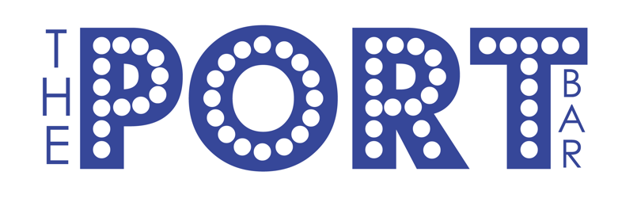
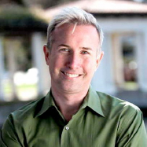
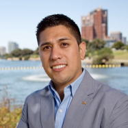

<!DOCTYPE html PUBLIC "-//W3C//DTD XHTML 1.0 Transitional//EN" "http://www.w3.org/TR/xhtml1/DTD/xhtml1-transitional.dtd">
<html xmlns="http://www.w3.org/1999/xhtml">
    <head>
        <meta name="google-site-verification" content="8d_Sc_dSf2M5ctgutGWs1Pygkk5AqIlGzd5JiZo4Uew" />
        <meta http-equiv="Content-Type" content="text/html; charset=utf-8" />
        <meta name="viewport" content="width=device-width" />
        <meta name="author" content="The Port Bar - Oakland" />
        <meta name="description" content="Welcome to The Port Bar in Oakland"/>
        <meta name="keywords" content="The Port Bar, Oakland California, The Port, Bar, California, Oakland Downtown, Full Bar, Gay, Oakland Gay, Straight Friendly, LGBT, Oakland Gay Community, Oakland Broadway Bar, 19th St. Bart Station, Alcoholic Drinks, Gay Cruise"/>
        <title>The Port Bar - Oakland</title>
        <link href="fav.png" rel="icon" title="The Port Bar" type="image/png" />
        <link href="css/style-sheet.css" rel="stylesheet" type="text/css" />
    </head>
    <body>
        <div id="container">
            <div class="inner_wrap">
            	<div id="logo">
                	<a href="index.html"></a>
                </div>

                <div class="nav-wrapper">
                    <div class="nav">
                        <div class="nav-item">
                            <a class="nav-home" href="index.html">HOME</a>
                        </div>
                        <div class="nav-item">
                            <a class="nav-about" href="our_story.html">OUR STORY</a>
                        </div>
                        <div class="nav-item">
                            <a class="nav-menu" href="menu.html">MENU</a>
                        </div>
                        <div class="nav-item">
                            <a class="nav-location" href="location.html">LOCATION</a>
                        </div>
                        <div class="nav-item">
                            <a class="nav-media" href="media.html">MEDIA</a>
                        </div>
                    </div>
                </div>

                <div class="about-wrapper">
                    <div id="our_story">
                        <p> After years of living, working and loving in Oakland, our team noticed a common complaint among the diverse, yet ever growing LGBT community in Oakland.  Despite the fact that every day Oakland seemed to get better, safer and open the doors of another fun place, there was no seven day a week gathering place for the LGBT community in our thriving downtown.  Our team, armed with background in small business entrepreneurship, economic development and community service sought to change that.</p><br />

                        <p>The management team is an especially close one. Together we share a single vision: to provide a unique and entertaining experience through exceptional service to LGBT East Bay residents and their heterosexual friends.
                        </p>
                    </div>
                    <div id="vimeo">
                        <iframe src="http://player.vimeo.com/video/79344515?title=0&amp;byline=0&amp;portrait=0" width="600" height="338" frameborder="0" webkitallowfullscreen mozallowfullscreen allowfullscreen></iframe>
                    </div>
                </div>

                <div class="donate-wrapper">
                    <div class="donate-title">Help Us Bring the Oakland LGBT Community together by contributing</div>
                    <form action="https://www.paypal.com/cgi-bin/webscr" method="post" target="_top" align="center">
                        <input type="hidden" name="cmd" value="_s-xclick">
                        <input type="hidden" name="hosted_button_id" value="ZDE4WRLWX6W4W">
                        <input type="image" src="https://www.paypalobjects.com/en_US/i/btn/btn_donateCC_LG.gif" border="0" name="submit" alt="PayPal - The safer, easier way to pay online!">
                        
                    </form>
                </div>
            </div>

            <div id="the_team">
                <h1>The Team</h1>
                <div class="img-wrapper">
                    
                </div>
                <h2>Sean Sullivan <span class="title"> General Director</span></h2>
                <p>An award-winning mixologist, Sean Sullivan will serve as founder, President, general director of the LLC and managing director of The Port.  An award winning mixologist, Sullivan was raised in the service industry.  His mother founded “We Like to Party” in New York in the 1990s. We Like To Party provided wait and bar staff to venues and large and small private parties.  For three years, Sullivan oversaw their private party bookings and managed non-contracted staff over dozens of events a year.  He received on the job training in management and bartending.  Sullivan also co-founded and managed The Vault, an on campus coffee shop that operated out of unused space at Butler Hall at St. Bonvanture University. </p><br />
                <p>Sullivan has been an executive in non-profit management for over 14 years, 11 of those years in Oakland, CA. Sullivan has supervised staff and overseen complex agency budgets. Sullivan has been a leader in Oakland’s LGBT Community as an activist, advocate, organizer and fundraiser, most notably as a head fundraiser for No on Prop 8-Equality California.  He has overseen nearly 100 different events while managing permanent and contract staff.  In 2005, Sullivan purchased a private 17,000 square foot home from then mayor, now Governor Jerry Brown and turned it into Covenant House, a transitional living and career center for homeless youth. He oversaw the fundraising, community outreach, renovation and conditional use permit process for the entire six million dollar project providing a home to homeless youth, many who identify as LGBT.
                </p><br /><br />
                <div class="buffer"></div>

                <div class="img-wrapper">
                    
                </div>
                <h2>Richard Fuentes <span class="title"> Vice President</span></h2>
                <p>Richard Fuentes will serve as a co-founder, Vice President and director of The Port. <br />Fuentes was most recently Legislative Director to long time Oakland City Council President Ignacio De La Fuente. </p><br />
                <p>Fuentes worked in retail management for over five years, as well as in municipal economic development and in development for a community based agency in San Francisco’s mission district.  He has managed hourly staff in a high turnover retail environment. </p><br />
                <p>With his most recent experience in Oakland city government, Fuentes will execute his understanding of the city’s permitting and planning process to implement the opening of The Port.  Fuentes has worked in economic development so he has a deep understanding of Oakland’s municipal laws and programs will benefit this space.  He has also authored the legislation creating parklets that this space may seek to implement. </p><br />
                <p>Fuentes has been actively connected to the Oakland LGBT political community as co-founder of the Oakland Rainbow PAC. <br />Fuentes was also a candidate for office in District 3’s school board race.</p>
            </div>

            <div id="footer">
                <p>©2014 THE PORT BAR - ALL RIGHTs RESERVED "All Photography by Charles Schoenberger Photography"</p>
            </div>
        </div>
    </body>
</html>
<script type="text/javascript">
    var path = window.location.pathname.split('/');
    var current_page = path[path.length - 1];
    console.log(current_page);
    if (current_page === 'index.html') {
        var link = document.getElementsByClassName('nav-home')[0];
        link.style['border-bottom'] = '2px solid #374997';
    } else if (current_page === 'our_story.html') {
        var link = document.getElementsByClassName('nav-about')[0];
        link.style['border-bottom'] = '2px solid #374997';
    } else if (current_page === 'menu.html') {
        var link = document.getElementsByClassName('nav-menu')[0];
        link.style['border-bottom'] = '2px solid #374997';
    } else if (current_page === 'location.html') {
        var link = document.getElementsByClassName('nav-location')[0];
        link.style['border-bottom'] = '2px solid #374997';
    } else if (current_page === 'media.html') {
        var link = document.getElementsByClassName('nav-media')[0];
        link.style['border-bottom'] = '2px solid #374997';
    }
</script>
